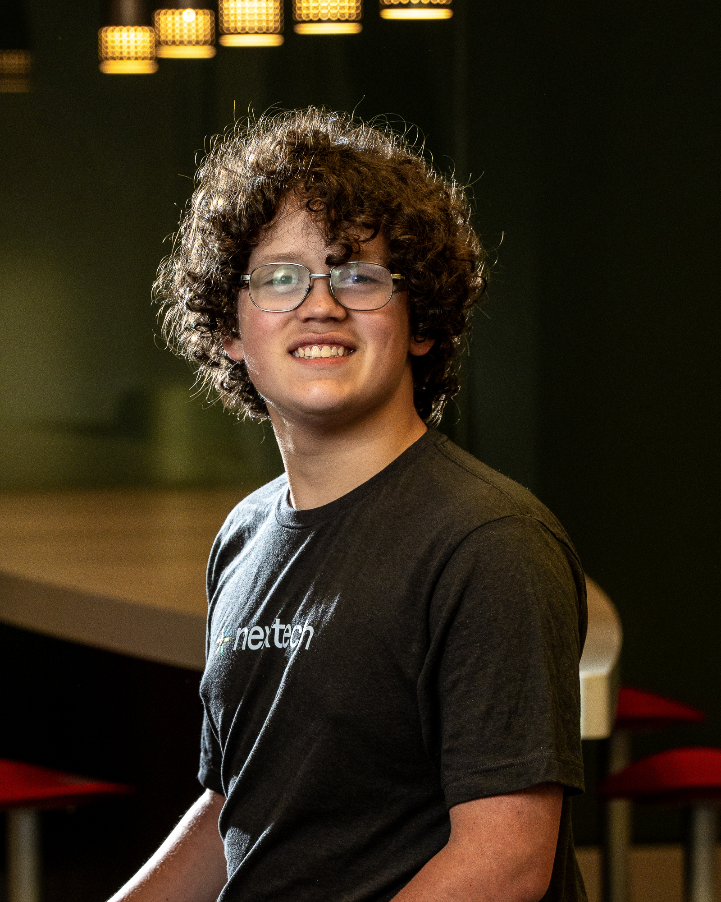
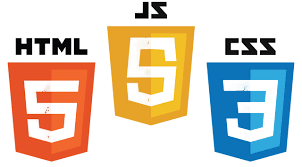

I was born with a super rare genetic condition called KTS or Klippel-Trenauney-Sydrome. Because of this, I have extra blood flow in my leg along with many other complications. I have had 80+ surgeries up in Indianapolis, and countless appointments. I have a team of 12 doctors up at Riley children's hospital in Indianapolis.
I'm a core member of the robotics team. Additionally, I'm one of the team captains on our archery team. When I'm not doing school work I enjoy hanging out with my friends and being outdoors.
I have a 4.0 unweighted GPA and I'm currently top of my class. I have been doing landscaping for a few years now, and want to go into either computer hardware engineering or biomedical engineering.
Through nextech, and the thunderbolts robotics team I have gained many CS skills including the basics of HTML, CSS, and JavaScript

Along with these skills I also have many soft skills like teamwork, patience, determination. Along with many others. I use these skills in my day to day life by helping me work with and help others.
Processing with AI. (2026). Gitlab.io. https://processing-with-ai.gitlab.io/part2/js-discovery/